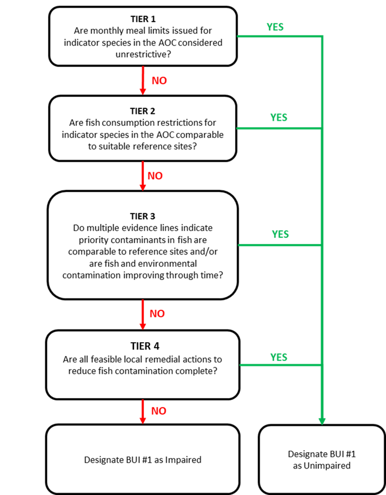

Chapter 3 Methods
3.1 Generic criteria
In 2021, following a series of workshops attended by RAP leaders and stakeholders, a shared generic delisting criterion and assessment framework were adopted by several Canadian AOCs. The intent was to draw from the experiences of the Toronto and Region, Niagara River, and Detroit River AOCs in using a tiered framework for assessing BUI 1. These workshops put forward a standardized operating procedure, data sources, and data interpretation guidelines applied in the tiered framework.
The 2016 preliminary assessment (Bhavsar 2016) utilized the following delisting statement as part of its BUI #1 assessment:
“Consumption advisories for fish of interest in the AOC are unrestricted or no more restrictive than the advisories for suitable reference site(s) due to contaminants from locally-controllable sources.”
In 2024, the Fish Consumption Technical Working Group for the St. Lawrence River (Cornwall/Akwesasne) AOC adopted this delisting criterion and its associated tiered assessment framework, in addition to a new biocultural criterion designed to address impairments to biocultural practices that fall outside the scope of official consumption advisories. The delisting criteria were accepted as the following:
This BUI can be redesignated as “Not Impaired” when the following Delisting Criteria have been met:
1.1 Consumption advisories for fish of interest in the AOC are non-restrictive or no more restrictive than the advisories for suitable reference site(s) due to contaminants from locally controllable sources.
1.2 An increase in the Akwesasne community knowledge and/or willingness to engage in safe biocultural and traditional consumption of fish and wildlife.
Criterion 1.1 is assessed through the tiered framework, whereas criterion 1.2 is an additional metric for the BUI that is assessed in a separate technical report.
3.2 Tiered assessment framework
To evaluate the Criterion 1.1 of BUI 1, we applied a tiered framework originally developed for other Great Lakes Areas of Concern (AOCs) and adapted it for use in the St. Lawrence River AOC. This framework proceeds in a stepwise manner, beginning with simple threshold tests and progressing toward more complex statistical modeling. Each tier is designed to answer a progressively more nuanced question about the degree of impairment, with multiple lines of evidence integrated to provide a comprehensive assessment. The basis of the tiered assessment report is outlined in Bhavsar (2016) and Drouillard (2022), the latter of which being an adapted framework with additional methods, and on which the present assessment is based. The adapted framework as applied in the SLR AOC is outlined in Figure 3.1.
The framework sets out the order in which three evaluation methods, or tiers, are to be applied, and from which a recommendation on redesignation is made. Since its inception, the tiered assessment framework has been revised and adapted to better fit the needs of the redesignation process of BUI 1. The adoption of generic delisting criteria for BUI 1 across the remaining Canadian AOCs where BUI 1 is impaired has allowed for a more standardized approach to evaluate each aspect of the criteria. In the AOCs where the Tiered Framework has been applied, (cite Detroit and Toronto), the assessment tiers evaluate the degree of fish consumption advisories firstly to an “unrestrictive” monthly allowance, and then compared to the advisories in comparable reference sites. A combination of angler surveys and scientific publications allowed RAP teams to assess the BUI in terms of desired consumption rates of species consumed by local communities. New fish contaminant collections by MECP and MNR across the Great Lakes have allowed updated comparisons to be made to reference sites in Tier 2 and Tier 3. Furthermore, a fourth tier has been added, which aims to assess the local environmental conditions and previous remedial actions taken to address whether further actions are necessary following a failed Tier 3 outcome (see figure X for a full breakdown). In the St. Lawrence River (Cornwall/Akwesasne) AOC, the framework follows the procedure outlined by Drouillard in the 2022 Toronto AOC assessment report. Since the previous assessment report in 2017, the Guide to Eating Ontario fish has been updated with new collections following the report’s recommendations, and the SLR AOC has adopted a version of the generic delisting criterion. Below is a summary of each tier, and the methods for which they are evaluated.

Figure 3.1: Modified 4 tiered evaluation framework applied in the 2022 BUI 1 Assessment for the Toronto and Region AOC. (Drouillard 2022)
3.2.1 Tier 1
The first step of the tiered framework provides a coarse screening of whether fish consumption advisories in the AOC are restrictive in absolute terms. Advisory values, expressed as the number of meals per month recommended for the general and sensitive population groups, were compiled from the Guide to Eating Ontario Fish, published by the Ontario Ministry of the Environment, Conservation and Parks (MECP) These advisories are based on contaminant concentrations measured in sportfish and translated into species- and size-specific consumption categories using contaminant thresholds.
Advisory values for each fish of interest in the AOC were then compared against a threshold representing acceptable levels of consumption, determined per-species by community survey (see Section 3.3. Any advisory below this benchmark was considered restrictive, while those at or above the threshold were considered non-restrictive. This step provides a baseline indication of potential impairment and allows the RAP team to quickly identify species or size classes where consumption guidance is most restrictive, independent of regional comparisons. Additionally, Tier 1 allows the RAP team to exclude unrestricted fish from further analysis, since these species meet the delisting criteria at its most basic level. Tier 1 uses a strict passing threshold, where any number of restrictive size categories in either population type (general or sensitive) will cause a species to fail and move to Tier 2.
3.2.2 Tier 2
Tier 2 assesses whether the environmental conditions pertaining to the BUI in the AOC are comparable to those at appropriate non-AOC reference sites. If the AOC conditions are better or equivalent to reference sites, the BUI in the AOC is redesignated “Not Impaired”, otherwise the assessment moves to Tier 3. Similarly to Tier 1, Tier 2 uses official consumption advice provided by MECP, using the same species of interest (except for those that passed Tier 1 assessment).
The advisory values in the AOC are compared to the median value of advisories for reference sites. In Tier 2, reference sites are selected as those representative of a broad measure of background intensity of advisories across a comparable region. That is, selection of reference sites for Tier 2 does not consider similarity of ecology, environmental conditions, or history; nor does it select for pristine, undisturbed water bodies. Rather, reference sites are characterized as a broad geographical representation of the region that are not AOCs. For this analysis, we selected all non-AOC fishing zones in the Upper St. Lawrence River and Lake Ontario for which consumption advice is issued for the same species of interest in the AOC.
To compare the intensity of advisories, we compared the advisory value for each species, size class, and population type for available species of interest in the AOC to the median of reference advisories for which similar advisories were issued. Because meal/month consumption advisories are issued in discreet categories (see Section 3.4.0.1), reference median values were rounded up to the next advisory value. AOC advisory values below the the desired consumption threshold (e.g., 8 meals/month) are compared to their respective reference medians, and those size categories equal to or above the reference median pass Tier 2 assessment, while those below the reference median fail Tier 2. Similarly to Tier 1, Tier 2 adopts a strict threshold, where any number of size categories for either population type will cause a species to fail and move to Tier 3.
3.2.3 Tier 3
Tier 3 evaluates the status of the BUI using a weight of evidence approach involving multiple lines of ecological and environmental evidence. The overall outcome of the weight of evidence available will support or not support redesignation of the BUI. Tier 3 evidence lines are determined in aggregate, meaning that unlike the decision tree between tiers, all sub-categories of Tier 3 are considered simultaneously regardless if a species passes or fails one or more evidence lines. Tier 3 adopts multiple evidence lines, including the following:
3.2.3.1 Tier 3A: Virtual advisory
Tier 3A seeks to address the relationship between priority contaminants in the AOC and fish consumption advice. Because fish consumption advisories consider multiple fish contaminants, and are issued based on the strictest restriction from any contaminant (cite), it is important to isolate the effect of priority AOC contaminants on driving local fish consumption advisories. Additionally, official advisories may be based on data that dates as far back as the 1970s. Thus, it is important that restrictions on fish consumption are considered using more recent data to account for restorative effects in the AOC associated with previous remedial actions. To achieve this, “virtual advisories” are created using parallel data sources and methods to that is used by MECP in generating official consumption advice. Fish contaminant data (obtained from MECP, see Section 3.4.0.2) is filtered to the contaminant of concern (in the case of the SLR AOC, this is mercury) and the previous 10 years of data (2014 and more recent), and this data is used to calculate virtual advisories based on the MECP method.
Virtual advisory values were generated using by modelling the relationship between fish length and contaminant concentration. For each region (AOC and reference), the function fits a log-log linear model (lm(log(Value) ~ log(Length)) to evaluate whether a significant relationship exists (p ≤ 0.05). If so, predicted concentrations are generated across a continuous length range, and then averaged within fixed 5 cm bins. Advisory levels are assigned using MECP-defined contaminant- and population-specific (General/Sensitive) thresholds to the mean predicted concentrations. If no significant relationship is detected, advisory levels are based on the mean concentration of all observations within each bin. If any size categories of the virtual advisory are restrictive compared to the desired consumption rate and to reference values, Tier 3A assessment is unsupportive of delisting for this species.
(Figure for power relationship)
(Table for thresholds)
Virtual advisories are not to be used as a replacement for official consumption advice, and are limited strictly to the evaluation of this BUI.
The virtual advisories in this tier are evaluated similarly to Tiers 1 and 2; i.e., first it is determined if virtual advice for any size categories are restrictive compared to the community desired consumption rate (see Section 3.2.1), then if virtual advice for any size category are more restrictive than suitable reference sites. Similarly to Tiers 1 and 2, any number of restrictive size categories are considered a failure for Tier 3A.
3.2.3.2 Tier 3B: Comparisons of fish contaminants in the AOC vs Reference
To determine the degree of contamination in fish in the AOC by priority contaminants, the concentration of contaminants (mercury for SLR) in fish tissue are compared between the AOC and suitable reference sites.
Reference sites for Tier 3B differ from those used in Tier 2 in that the MECP fish collection zones do not correlate directly with the zones used in the official advisories. For example, one official advisory zone (as is used in Tier 2) may comprise several collection areas. For Tier 3B, reference zones are similarly limited to non-AOC collections zones in the upper St. Lawrence River (upstream of the Moses-Saunders Dam) and Lake Ontario for which collections of the evaluated species have occurred within the most recent 10 years of study (2014-2024). The number and locations of reference sites may differ between species depending on the availability of data.
To assess differences in fish contamination between the AOC and reference sites, contaminant–length relationships were modeled using Generalized Additive Models (GAMs), allowing for non-linear associations. For this model, length was first log-transformed to control for skewed data distributions (contaminant-length relationships are often exponential), which was used as a fixed smooth effect along with region (AOC or reference), with collection area as a random effect to control for site-specific confounding variables. For each species of interest, we first tested whether the shape of the concentration–length relationship differed significantly between AOC and reference fish by comparing the full model to a null model with reduced terms using ANOVA. Where models supported statistically similar trends (non-significant interaction), we compared size-adjusted contaminant levels using estimated marginal means. Where shapes differed significantly, contaminant concentration values were compared by GAM-predicted values across the range of lengths of each fish species at 5 cm intervals. A threshold of α = 0.05 was used to evaluate statistical significance throughout.
Where contaminant-length relationships differed between AOC and reference, Tier 3B can be considered supportive of redesignation when the majority of size classes do not significantly differ in predicted contaminant concentration between AOC and reference. Where the contaminant-length relationship does not significantly differ, Tier 3B can be considered supportive of redesignation when the marginal mean of contaminant concentration does not significantly differ between AOC in reference. Otherwise, Tier 3B is considered not supportive of redesignation.
3.2.3.3 Tier 3C: Temporal trends of contaminants in fish
Tier 3C looks to evaluate the direction of trends in contaminants through time, and make predictions about how these trends will continue into the future. Temporal trends in contaminants of concern in AOC fish of interest were assessed using generalized additive mixed models (GAMMs) across all years of data. Log-contaminant concentration was modeled with a log-linear fixed effect for sample year to assess the temporal trends on an exponential scale, a smooth fixed effect for log-length to account for differences in contaminant concentration across fish length, and a site smooth random effect to account for regional differences in sampling and other confounding variables. The slope (on log scale) represents the annual rate of change in mercury concentration, defined as k = -slope (such that k > 0 indicates a decline, and k < 0 indicates an increase in contaminant concentration). Standard errors are obtained via the delta method. This model allows us to determine if contaminant trends are stable, increasing, or decreasing over time. If contaminant concentrations are stable or increasing, Tier 3C is unsupportive of delisting. If contaminant concentrations are decreasing, we use the model to predict future trends in contaminants.
Using this decay model, we estimated the time required to reach a nonrestrictive monthly meal allowance for a the upper quartile fish length (rounded to the nearest 5 cm) for sensitive populations. The half-life of contamination in each species was derived from the fitted yearly slope of log-transformed concentrations in the GAMM. If concentrations are increasing, a doubling time is reported instead. To estimate time to unrestrictive advisory threshold, predictions were anchored at the most recent observed year and a representative length (upper quartile rounded to the nearest 5 cm), and the model assumed a continuous rate of change using the half-life estimate. The model projects the expected time required for contaminant concentrations of upper-quartile-length fish to fall below the restrictive threshold established in Tier 1 for the sensitive population. For instance, if the desired consumption rate of a species is 8 meals per month, the threshold for the sensitive population would be 0.16 µg/g (Table ??). A timeline of 10 years or fewer is considered supportive of delisting, whereas a timeline of 10 or more years is unsupportive for delisting for this species. This estimate supports the temporal assessment of Tier 3C by forecasting how long the BUI will remain impaired in the absence of additional remedial actions.
3.2.4 Tier 4
Tier 4 assessment, like Tier 3, uses several evidence lines to determine support for delisting the BUI. Tier 4 expands the scope from fish to the environment, assessing the history and impact of past remedial actions on environmental recovery and fish contamination, as well as identifying potential future actions. Using a combination of literature review, monitoring data, and ecological metrics, available data is weighed in relation the restoration actions identified in the Stage 2 and draft (unpublished) Stage 3 RAP reports, as well as the degree of completion of these actions. Data may include contaminant concentration and track-down studies in the water, sediments, young of year (YOY) forage fish, and benthic invertebrates within the AOC and tributaries. Tier 4 may also include modelling approaches to relate environmental conditions to fish contaminants, including mercury isotopic tracer studies to determine the sources and movement of mercury into the food web.
(This session to be expanded in future)
3.3 Community fish consumption survey
To properly address the needs of the community surrounding the AOC through this BUI assessment, it is important to understand the the impact of the BUI on the consumption habits of the community. By asking the community about consumption habits, we can identify a list of species of interest in the AOC, how often these species are being consumed, and the desired rate of consumption if there were no issues related to priority contaminants.
A survey was conducted in Cornwall and surrounding regions from January to November of 2025. The survey asked respondents about where community members fished, their fishing methods, whether they eat fish, which fish from the AOC they consume (or feed to others), how often they eat each kind of fish, their normal portion size for each fish, their methods of cooking, and how often they would eat each fish species if there were no issues related to contamination in the AOC. The survey asked respondents the same questions about fish consumed from outside of the AOC. Additionally, the survey asked respondents if they had heard of the Guide to Eating Ontario Fish and the RAP program, and whether either of these resources have modified their consumption habits.
Responses from this survey were used to establish the community desired consumption rates for each species using the following methods: First, species of interest are defined as those consumed by at least 5% of anglers who eat fish. Second, a weighted average for meal frequency was calculated by multiplying the number of respondents by their desired monthly meal rate (converted from survey response options to monthly meal equivalents, see Table 3.1), then dividing by the total number of respondents. Since the BUI assessment aims to address the level of impairment to fish consumption in the AOC, the desired consumption rate is set based on the amount of fish the community would eat if the BUI was not impaired, rather than the current consumption rate. Third, a weighted average meal size was calculated similarly to frequency, with survey response options converted to monthly meal equivalents as per Table 3.2. Finally, the weighted average frequency was multiplied by the weighted average portion size to get an average desired consumption rate, which was rounded up to the next advisory category for the Sensitive population (0, 4, 8, 12, 16, or 32 meals per month).
Consumption Rate (Survey) | Conversion |
|---|---|
A few times per year | 1 |
A few times per month | 8 |
A few times per week | 16 |
Daily | 32 |
Portion Size (Survey) | Conversion |
|---|---|
Less than 4 oz | 0.25 |
4 oz | 0.50 |
4-8 oz | 0.75 |
8 oz | 1.00 |
Greater than 8 oz | 2.00 |
3.4 Data Sources
3.4.0.1 MECP Advisory Data
Tier 1 and Tier 2 of the BUI 1 assessment framework are based on the official fish consumption advisories issued by the Ontario Ministry of Environment, Conservation and Parks (MECP) for the AOC and suitable reference sites. For this assessment report, the most recent advisories were pulled from the 2024 Guide to Eating Ontario Fish (at the time of writing, available at: [link]). The Guide provides monthly meal recommendations based on the size and species of fish available from collections in each area assessed. Recommendations are based on contaminant testing of fish within each zone, which are modeled and compared against concentration thresholds associated with a recommended monthly meal allowance. In the St. Lawrence River (Cornwall/Akwesasne) AOC, the monthly meal recommendations correspond to advisory tables issued for the “St. Lawrence River – Lake St. Francis” zone, available at the time of writing at (link). Advisory information was collected for all available species for which advice is issued, at all size classes and for the two populations identified: General and Sensitive Populations. For reference sites, information was collected only for species that are also monitored in the AOC. Fish consumption advisories are provided for General and Sensitive Populations. Advisories for Sensitive Populations are intended to be used by women of childbearing age and children under the age of 15. Generally, advisories tend to be stricter for the Sensitive Populations, with lower contaminant concentration benchmarks for some contaminants such as mercury, due to the greater sensitivity of this population to negative health effects from some contaminants. Maximum monthly meal recommendation categories for the Sensitive Population include 32, 16, 12, 8, 4 and 0 meals/month. Maximum monthly meal recommendation categories for the General Population include 32, 16, 12, 8, 4, 2, 1 and 0 meals per month. For the purposes of this assessment, advisories for both populations will be considered for Tiers 1 and 2.
3.4.0.2 MECP Contaminant Data
Tier 3 assessment is primarily based on contaminant data compiled by MECP, which is used to generate official consumption advice. This data is collected across the waters of Ontario by MECP and partner organizations, and comprises fish measurements such as sample site, length, sample year, weight, sex, and contaminant concentration for a number of fish of interest within each waterbody. These data were used to calculate virtual advisories, compare contaminant concentrations between AOC and reference sites, and make predictions of temporal trends of contaminants within the AOC.